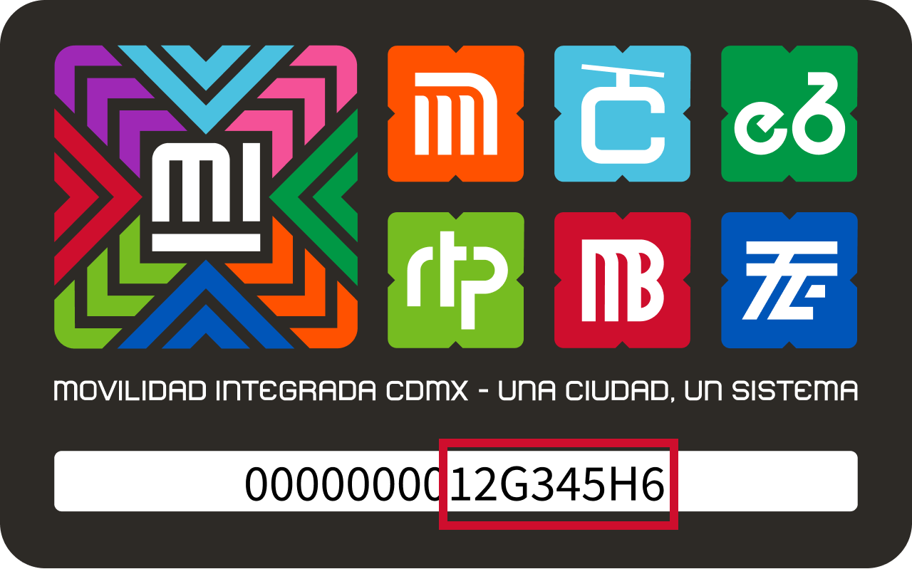

×
Sobre esta página
Este es un proyecto personal, sin fines de lucro, ni afiliación gubernamental ni partidista.
Es seguro y privado para los usuarios, ya que no recopila ni guarda ninguna información, de la tarjeta o de sus usuarios, todo se ejecuta desde el navegador.
El código es público y está disponible en: GitHub.
Sobre los datos
La información proviene directamente de la página pública oficial de SEMOVI (https://app.semovi.cdmx.gob.mx/MI_movilidad/trazabilidad). Este Sitio lo único que hace es visualizarla.
Solo se cuentan los viajes en los que se usó la tarjeta MI, no incluye los que se hacen con boletos, apps o pagos en efectivo.
En la gráfica de momento del día, se considera Mañana antes de 12pm, Tarde antes de 7pm y noche de 7pm en adelante.
Así puedes ver el número de tu tarjeta:
